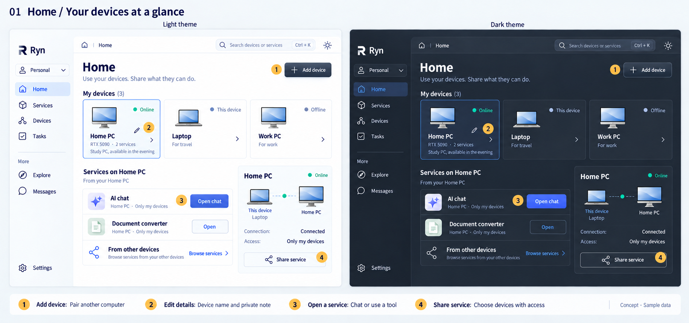
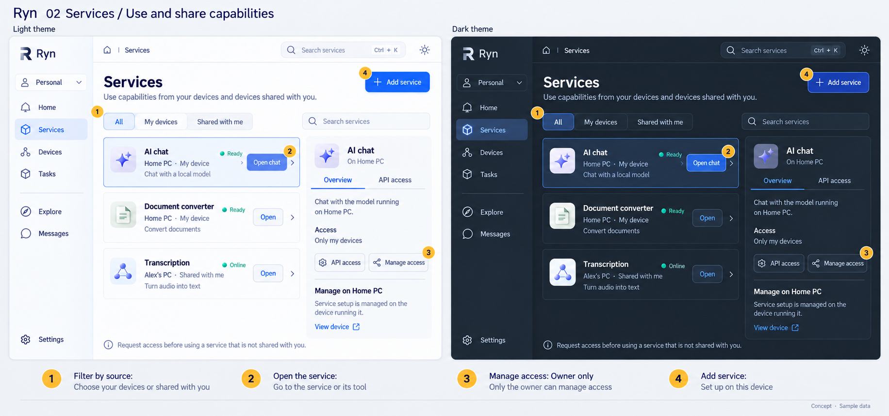
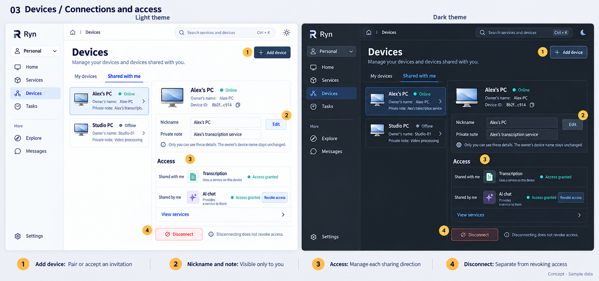
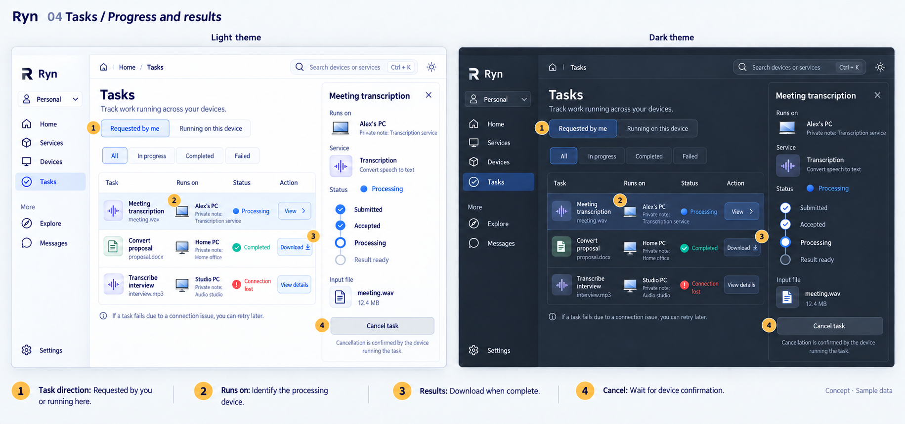
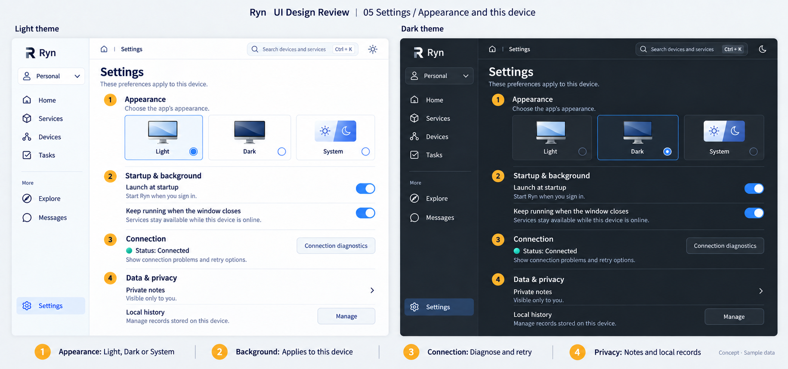
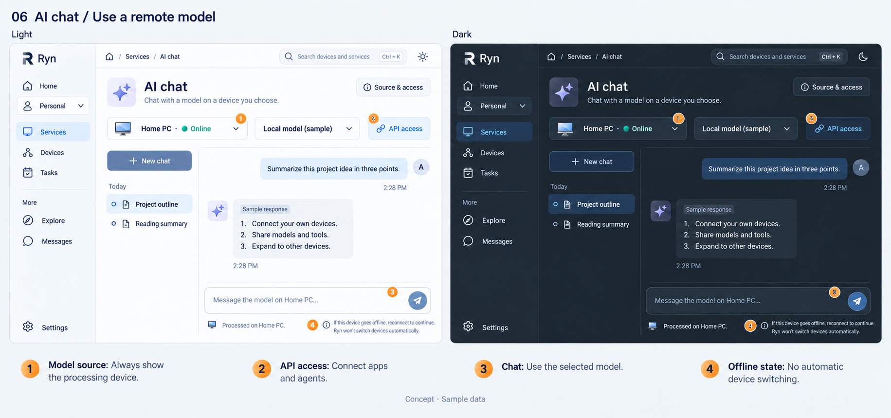
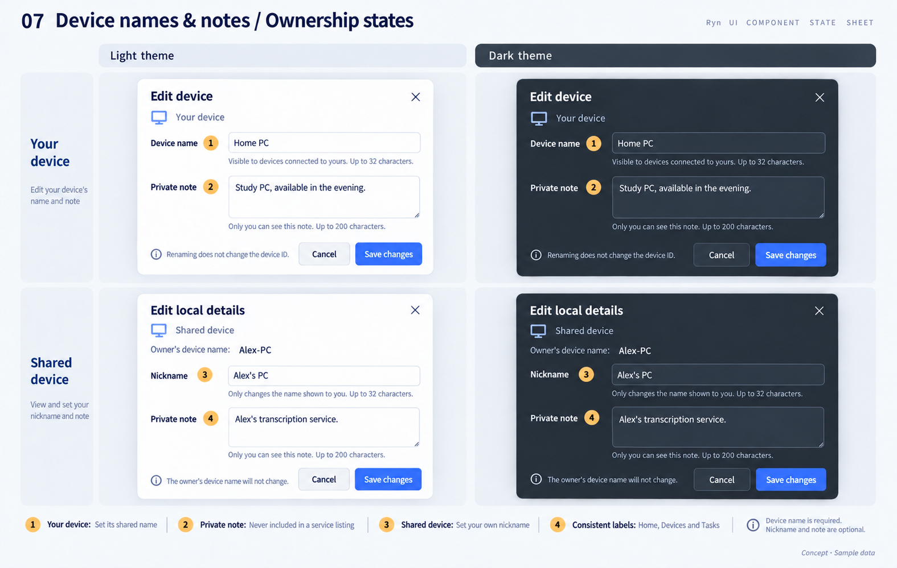

01 · Home
Your devices and quick access to their services

02 · Services
Use, provide and share capabilities

03 · Devices
Connections, nicknames, private notes and access

04 · Tasks
Processing devices, progress, results and cancellation

05 · Settings
Appearance, background behavior, connection and privacy

06 · AI chat
Selected model, processing device, conversations and API access

07 · Device names and notes
Owner name versus personal nickname and private note
